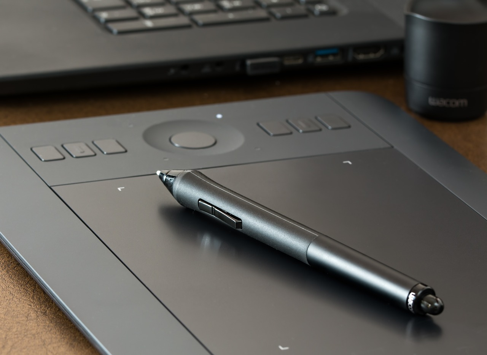
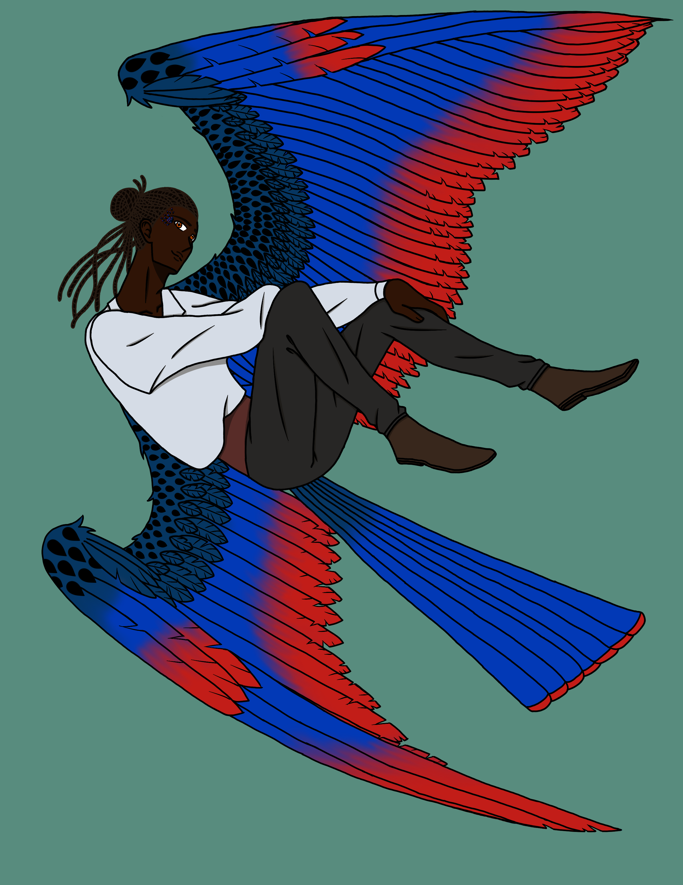
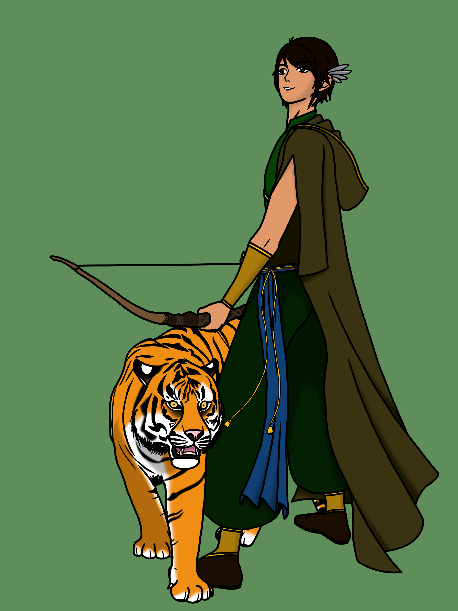

Art
Where I Started
I've been drawing for probably about as long as I could hold a pencil. I used to doodle a lot in school and have taken a few art classes here and there across my school career. Nowadays I mostly focus on digital art.
My Tools of the Trade
When I started drawing I used just a simple pencil and paper, and still do on occasion today. Primarily though, I use the Apple-exclusive app Procreate. Some other programs I've dabbled in are:
- Ibis Paint X
- Sketchbook
- Clip Studio Paint
- Photoshop
- Adobe Animate
- Adobe Illustrator
I highly recommend investing in a drawing tablet or stylus pen and art glove, but they aren’t necessary. A mouse or your finger can work just as well. A friend of mine uses an iPad for his art but uses his finger instead of a stylus.
How to Get Inspired
Inspiration can come from anything. I usually go online or go out into the world and just look. Pinterest or DeviantArt are great free online sources to find inspiration. Or, if you prefer to draw something natural, going outside with a tablet or phone and taking a walk through the park can be great for getting the creative juices flowing.
My Art
Below are some examples of my art. I’m constantly refining and improving my skills, so don’t feel discouraged if your art isn’t where you want it to be yet. We are our own worst critics. Just keep practicing and exploring and you’ll do just fine!
 